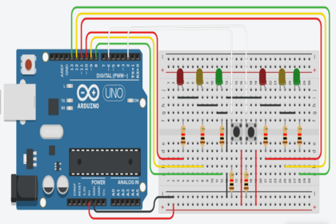

Timeline do Semáforo
Nessa timeline será apresentada a linha de tempo do desenvolvimento do semáforo com arduino!
Pesquisas!
Inicialmente, foram feitas muitas pesquisas, tanto a codificação do arduino, quanto sua montagem. Sendo assim, foram feitas diversas simulações e testes em plataformas online, para que não houvessem erros ao montar toda a estrutura.
Montagem!
Com o projeto já desenhado e funcionando na simulação, chegou a hora de montá-lo! Entre muitos fios e ligações, foi realizada a montagem do protótipo do semárofo.
Resultado final!
Com o protótipo já montado, foi necessário dar uma cara mais arrumada para o projeto. O protótipo foi posto dentro de uma caixa feita a medida, para que os fios não ficassem expostos. E por fim a caixa foi personalizada, com pistas simulando um cruzamento.
/>